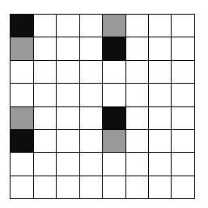

17 squares are marked on an 8x8 chessboard. In chess a knight can move horizontally or vertically, one space then two or two spaces then one - eg: two down and one across, or one down and two across. Prove that it is always possible to pick two of these squares so that a knight would need no less than three moves to get from one to the other.
Divide the board into 16 identical groups containing 4 squares - two of which are marked on the diagram below. We get another two by translating both groups down two squares, and the remaining groups by translating to the right to fill the empty columns.
It is easy to check that no fewer than 3 moves of a knight are required in order to get from one square in a figure to any other in that figure. By the pigeon hole principle, at least two of the 17 marked squares will be those in one of the figures.
Consider two cases:
1) Amongst the marked squares, squares of both colours are present. Then there must be no less than 9 marked squares of one of the colours, black for example. From a marked white square, a knight can only get to at most 8 different black squares in one move. The second move would then have to be to a white square, meaning that in order to get to at least one black square three moves will be required.
2) All of the marked squares are the same colour, for example black. Consider the smallest rectangle that includes all of the marked squares. Its area must be at least 33 - it includes no less than 17 black squares, and therefore at least 16 white squares. Therefore one of its sides, say the horizontal side, must be at least of length 6. In this case a knight standing on a marked square on the left edge of the rectangle cannot reach a marked square on the right edge of the rectangle in two moves. Therefore three moves are required.
The value of 17 squares given in the question is not a minimum. Let us call the distribution of marked squares 'correct' if it the 'distance' between any two marked squares on the board is no greater than two moves of a knight. We can prove that it is possible to 'correctly' distribute no more than 9 squares.
Note, that any two 'correctly distributed' squares of different colours must be exactly one move of a knight away, and any two 'correctly distributed' squares of the same colour must be exactly two moves of a knight away.
Assume that we have managed to 'correctly' distribute some marked squares. We will consider two cases.
1) There are no fewer than two squares of each colour marked. Then all of the white squares must be within two moves of a knight from both of the marked black squares. Therefore the two white squares must lie on the intersections of two circles of radius $sqrt{5}$ (whose centres lie on the black squares). However two circles intersect at no more than two points. Hence, there are no more than two white squares present. Analogously, there are no more than two black squares present, meaning there must be exactly 4 marked squares.
2) There are fewer than two marked squares of one of the colours (for example white). As shown in problem 116486 there can be no more than 8 marked squares of the other colour. Therefore in total, there can be no more than 9 marked squares that are 'correctly' distributed.
It is possible to 'correctly' distribute 9 squares, by placing the knight in the middle of the board, and marking the square the knight stands on, and the 8 different squares it can reach from there.